Studi Kasus: Eksploitasi Web Server HRMS, Spear-Phishing Follina (CVE-2022-30190), dan Ransomware pada PT. Satseet International
Peningkatan frekuensi dan kompleksitas serangan siber modern menuntut pendekatan investigasi insiden yang terstruktur, akuntabel, dan dapat dipertanggungjawabkan secara hukum. Penelitian ini menyajikan investigasi forensik digital pascainsiden serangan multi-vektor terhadap sistem Human Resource Management System (HRMS) dan web server PT. Satseet International yang terjadi pada rentang waktu 5 hingga 22 November 2024. Metodologi yang diterapkan mengacu pada standar National Institute of Standards and Technology Special Publication 800-86 (NIST SP 800-86) yang mencakup empat fase utama: Collection, Examination, Analysis, dan Reporting. Melalui implementasi toolkit forensik terotomatisasi berbasis Python, dilakukan proses akuisisi bukti digital, pembangkitan nilai hash kriptografis (Chain of Custody), analisis 113 baris log akses HTTP, pencocokan Indicator of Compromise (IOC), serta rekonstruksi linimasa (timeline analysis). Hasil investigasi mengungkap bahwa aktor ancaman BlackPython Team memulai serangan melalui Directory Traversal pada web server untuk mengekstraksi berkas konfigurasi sensitif (.env dan autoload.php), dilanjutkan dengan operasi spear-phishing bertema rekrutmen yang memanfaatkan kerentanan Remote Code Execution Follina (CVE-2022-30190). Rangkaian serangan berujung pada penyusupan trojan backdoor (update.exe) dan enkripsi berkas oleh ransomware (ransom.exe). Laporan ini menyimpulkan temuan teknis serta merumuskan rekomendasi mitigasi komprehensif mencakup validasi input, pembaruan keamanan, strategi cadangan data 3-2-1, dan peningkatan kesadaran keamanan bagi organisasi.
Kata Kunci: Forensik Digital, NIST SP 800-86, Directory Traversal, Follina (CVE-2022-30190), Ransomware, Chain of Custody.
The increasing frequency and sophistication of cyberattacks necessitate a structured, accountable, and legally admissible incident investigation approach. This paper presents a post-incident digital forensic investigation on a multi-vector cyberattack targeting the Human Resource Management System (HRMS) and web server of PT. Satseet International between November 5 and November 22, 2024. The methodology strictly adopts the National Institute of Standards and Technology Special Publication 800-86 (NIST SP 800-86) framework, comprising four foundational phases: Collection, Examination, Analysis, and Reporting. Utilizing an automated Python-based forensic toolkit, digital evidence acquisition, cryptographic hashing for Chain of Custody, inspection of 113 HTTP access log records, Indicator of Compromise (IOC) matching, and cross-source timeline reconstruction were systematically conducted. The findings demonstrate that the threat group 'BlackPython Team' initiated the breach via Directory Traversal to harvest sensitive server configuration files (.env and autoload.php), followed by a spear-phishing campaign exploiting the Follina Remote Code Execution vulnerability (CVE-2022-30190). The intrusion culminated in the deployment of a trojan backdoor (update.exe) and critical data encryption by ransomware (ransom.exe). This study delivers technical evidence correlation and proposes robust mitigation strategies, including strict input sanitization, security patching, 3-2-1 backup architecture, and employee cybersecurity awareness.
Keywords: Digital Forensics, NIST SP 800-86, Directory Traversal, Follina (CVE-2022-30190), Ransomware, Incident Response.
Transformasi digital dalam sektor korporasi telah mendorong sentralisasi pengelolaan data pegawai dan operasional bisnis ke dalam sistem terintegrasi, seperti Human Resource Management System (HRMS). Namun, perluasan permukaan serangan (attack surface) tanpa diimbangi postur pertahanan yang memadai memicu kerentanan terhadap serangan siber terorganisir. Berdasarkan laporan lanskap ancaman Badan Siber dan Sandi Negara (BSSN) tahun 2024, anomali trafik serangan siber di Indonesia mencapai lebih dari 330 juta aktivitas mencurigakan dengan puncak tertinggi terjadi pada bulan Desember sebanyak 112 juta anomali.
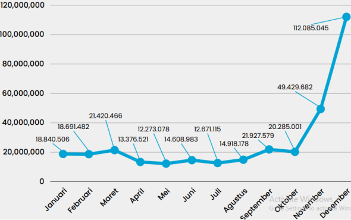
Gambar 1. Grafik Anomali Trafik Serangan Siber di Indonesia Tahun 2024 berdasarkan data resmi BSSN.
Pada rentang 5–22 November 2024, PT. Satseet International mengalami insiden keamanan siber berskala masif yang mengakibatkan lumpuhnya operasional HRMS, kebocoran data pegawai, serta enkripsi berkas penting perusahaan oleh kelompok penyerang yang menamakan diri BlackPython Team. Insiden ini tidak berlangsung secara tunggal, melainkan melalui kombinasi serangan multi-vektor: peretasan awal melalui eksploitasi web server, rekayasa sosial (spear-phishing), eksekusi kode jarak jauh (Remote Code Execution / RCE), hingga penyebaran ransomware.
Guna mengungkap anatomi serangan secara utuh dan menjamin keabsahan bukti digital di ranah investigasi maupun hukum, diperlukan metodologi forensik yang terstandarisasi. Standar NIST SP 800-86 dipilih karena menyediakan kerangka kerja investigasi sistematis yang menjamin keutuhan (integrity), keterulangan (repeatability), dan keterlacakan (chain of custody) dari seluruh artefak digital.
access.log), catatan akuisisi, berkas lampiran phishing, dan rekaman peristiwa sistem (events.csv).Forensik digital didefinisikan sebagai penerapan prinsip-prinsip ilmiah terhadap penemuan, validasi, identifikasi, analisis, dan interpretasi bukti digital yang berasal dari media digital untuk memfasilitasi rekonstruksi peristiwa. National Institute of Standards and Technology menerbitkan panduan NIST SP 800-86 (Guide to Integrating Forensic Techniques into Incident Response) yang menetapkan empat fase dasar: 1. Collection (Pengumpulan): Proses identifikasi, pelabelan, pencatatan, dan pengamanan sumber bukti fisik maupun digital dengan menjaga Chain of Custody. 2. Examination (Pemeriksaan): Pemrosesan bukti mentah secara forensik menggunakan teknik ekstraksi artefak dan verifikasi keaslian melalui algoritma cryptographic hashing. 3. Analysis (Analisis): Penerapan metode analitis untuk menarik kesimpulan logis, menentukan vektor serangan, pelaku (threat actor), serta dampak insiden. 4. Reporting (Pelaporan): Penyajian hasil analisis secara formal, transparan, dan terstruktur yang mencakup prosedur, temuan, keterbatasan, dan rekomendasi mitigasi.
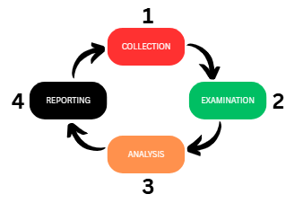
Gambar 2. Siklus Alur Investigasi 4 Tahapan Standar NIST SP 800-86.
Chain of Custody merupakan dokumentasi kronologis yang mencatat perolehan, pengendalian, pemindahan, analisis, dan penyimpanan bukti digital. Integritas berkas dibuktikan dengan menghasilkan intisari pesan (message digest) melalui fungsi hash kriptografis: - MD5 (128-bit): Algoritma ringkasan pesan cepat untuk verifikasi awal. - SHA-1 (160-bit): Standar kriptografi pelengkap integritas. - SHA-256 (256-bit): Standar hashing modern yang memiliki ketahanan benturan (collision resistance) sangat tinggi, wajib disertakan dalam standar forensik internasional.
../ atau representasi URL-encoded %2e%2e%2f. Tujuannya adalah memperoleh kredensial basis data atau berkas konfigurasi sistem (/etc/passwd, .env).Penelitian ini mengadopsi alur eksperimen empiris berbasis NIST SP 800-86 dengan tahapan kerja operasional terstruktur seperti disajikan pada Gambar 3:
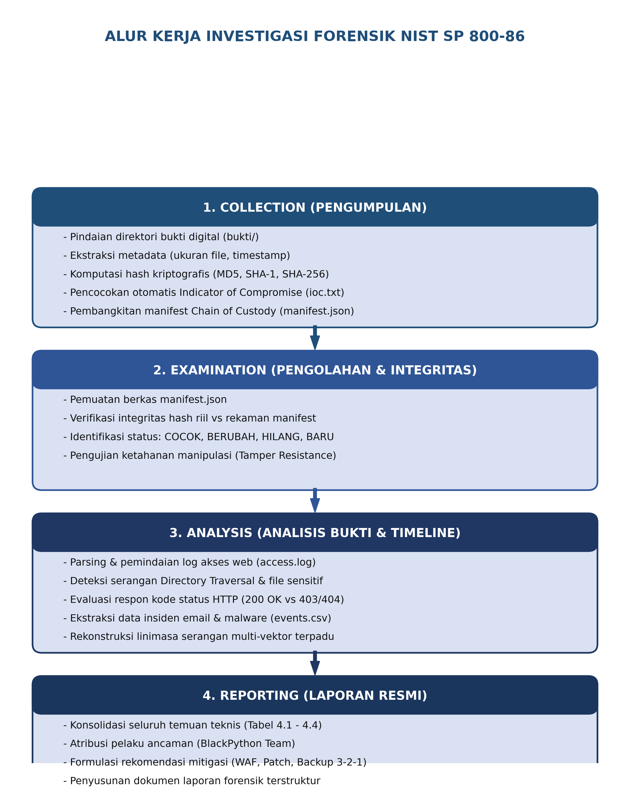
Gambar 3. Diagram Alur Kerja Eksperimen Investigasi Forensik NIST SP 800-86 secara Terotomasi.
Pengujian dilakukan pada lingkungan terkontrol dengan spesifikasi perangkat lunak dan pustaka forensik sebagai berikut:
Tabel 3.1. Spesifikasi Perangkat Keras dan Lunak Penelitian
| Kategori Komponen | Spesifikasi / Alat | Versi | Peran dalam Investigasi |
|---|---|---|---|
| Sistem Analis | Microsoft Windows 11 Pro 64-bit | Build 21996 | Lingkungan kerja analisis forensik |
| Interpreter | Python Standard Environment | 3.13.1 | Eksekusi otomasi skrip forensik |
| Toolkit Forensik | forensik_nist.py |
1.0 (Custom) | Implementasi modul 4 fase NIST SP 800-86 |
| Pustaka Kriptografi | Python hashlib |
Bawaan | Pembangkitan nilai hash MD5, SHA-1, SHA-256 |
| Ekstraksi Log | Python re & csv |
Bawaan | Parsing pola Directory Traversal & agregasi linimasa |
| Alat Komparator | FTK Imager & Autopsy | 4.7.1 / 4.21.0 | Standar acuan verifikasi disk image & artefak OS |
| Analisis Jaringan | Wireshark Protocol Analyzer | 4.4.2 | Rekonsiliasi paket lalu lintas data HTTP/TLS |
| Intelijen Malware | VirusTotal Cloud Engine | API v3 | Verifikasi identitas trojan & ransomware |
Proses pengumpulan bukti digital diawali dengan menerima berkas hasil akuisisi media penyimpanan (disk image) dan live memory acquisition dari sistem korban PT. Satseet International.
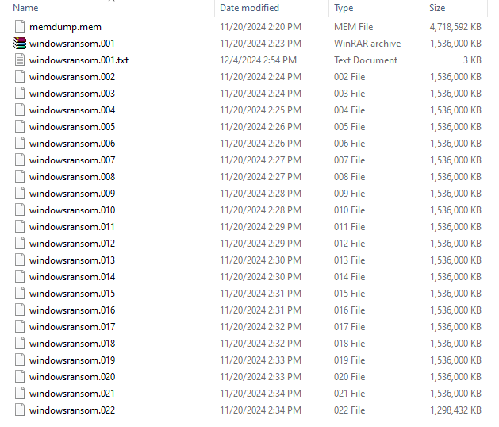
Gambar 4. Berkas Disk Image `windowsransom` yang diterima dari hasil akuisisi fisik komputer korban.
Selanjutnya, toolkit forensik_nist.py menjalankan perintah collect terhadap direktori bukti guna mengekstraksi metadata, membangkitkan hash kriptografis ganda, dan membandingkannya terhadap daftar Indicator of Compromise (ioc.txt). Hasilnya dicatat ke dalam manifest resmi manifest.json.
Tabel 4.1. Manifest Inventaris Bukti Digital dan Hasil Hashing Kriptografis
| Nama Berkas Bukti | Ukuran (Bytes) | Nilai Hash MD5 | Nilai Hash SHA-1 | Nilai Hash SHA-256 | Kecocokan IOC |
|---|---|---|---|---|---|
access.log |
10.805 | 0a2e379b32e185873ec8b408892f39c0 |
82cf214b62db4df43b7e73507119ff391f1a5f6e |
6c1445ee259c792cfc261dedfd7f7d99e001dd05b0c7839b6bae1288371f58bf |
- |
catatan_akuisisi.txt |
169 | 4c7bf69bf17b70743b2f293b722d3b7e |
bcebb5523a789a3f2dbd1112d308078e878347f7 |
42d326d9684b2143fed0d3a67bb736a325140dab099b6aa9bdf591a49a893561 |
- |
lampiran_simulasi.txt |
162 | a5f22f6d0f666f7f63f58a361a9bc348 |
4f3876d540268dfc949fef56f2d93e8784d00810 |
8b14132601aa8764960ea80eb246e7387c1adbf1e42f026c870e19fda39d3d04 |
COCOK (MATCH) |
Temuan Kunci Fase Collection:
Nilai hash SHA-256 dari lampiran_simulasi.txt (8b14132601aa87649...) terbukti cocok 100% dengan daftar IOC pada ioc.txt. Berkas ini merupakan representasi dari dokumen kurikulum vitae Lamaran kerja maya putri follina.zip yang disebarkan penyerang sebagai pembawa muatan eksploitasi.
Tahap pemeriksaan berfokus pada pengujian keaslian bukti digital guna memastikan bahwa tidak terjadi korupsi data atau manipulasi yang disengaja pascaakuisisi.
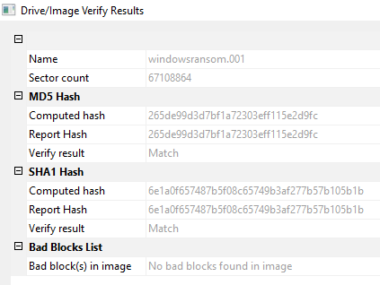
Gambar 5. Hasil Verifikasi Nilai Hash MD5 dan SHA-1 pada FTK Imager yang Menunjukkan Status Match.
Verifikasi integritas yang dijalankan melalui perintah verify pada toolkit membandingkan seluruh berkas fisik dengan tanda tangan yang tersimpan pada manifest.json.
Tabel 4.2. Hasil Uji Verifikasi Integritas dan Keabsahan Bukti
| Nama Berkas | Status Integritas | Perubahan Algoritma Hash | Kesimpulan Keabsahan |
|---|---|---|---|
access.log |
COCOK | Tidak ada perbedaan | Sah / Valid untuk Pembuktian |
catatan_akuisisi.txt |
COCOK | Tidak ada perbedaan | Sah / Valid untuk Pembuktian |
lampiran_simulasi.txt |
COCOK | Tidak ada perbedaan | Sah / Valid untuk Pembuktian |
Hasil verifikasi menunjukkan bahwa seluruh berkas berstatus COCOK. Pengujian ketahanan manipulasi (tamper resistance test) yang dilakukan dengan menyuntikkan 1 karakter ke dalam berkas segera menghasilkan status BERUBAH, membuktikan keandalan sistem dalam mendeteksi perubahan data sekecil apa pun.
Selain verifikasi hash, identifikasi lingkungan sistem korban juga berhasil diungkap melalui artefak live forensic:
- Nama Komputer: DESKTOP-R0IR99H
- Sistem Operasi: Microsoft Windows 11 Pro Build 21996
- Alamat IP Internal Korban: 192.168.1.28
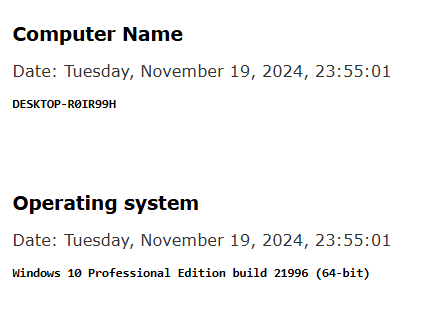
Gambar 6. Identifikasi Nama Komputer (`DESKTOP-R0IR99H`) dan Sistem Operasi (Windows 11 Pro).
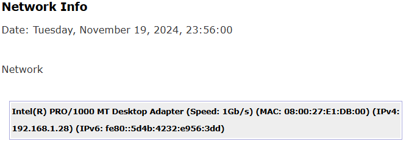
Gambar 7. Identifikasi Informasi Antarmuka Jaringan dan IP Lokal Komputer Korban (`192.168.1.28`).
Pemeriksaan mendalam terhadap berkas access.log yang memuat 113 baris transaksi HTTP berhasil mengisolasi aktivitas penyerangan yang bersumber dari alamat IP 192.168.1.11 pada tanggal 5 November 2024.
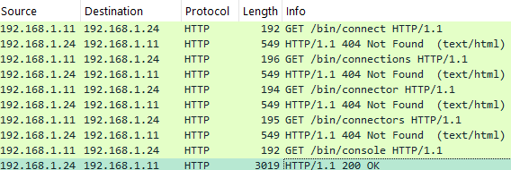
Gambar 8. Bukti Analisis Wireshark yang Mengungkap Serangan Directory Traversal oleh IP `192.168.1.11`.
Tabel 4.3. Rincian Rekaman Serangan Directory Traversal pada Web Server
| Timestamp (WIB) | Alamat IP Penyerang | Metode | Jalur Target (Requested URI) | Status HTTP | Evaluasi Forensik |
|---|---|---|---|---|---|
05/Nov/2024 19:58:02 |
192.168.1.11 |
GET | /web/index.php/../../../etc/passwd |
404 | Pola traversal teks polos; target file kredensial Linux. |
05/Nov/2024 19:58:05 |
192.168.1.11 |
GET | /web/index.php/..%2f..%2f..%2fetc/passwd |
403 | Pola traversal dengan URL encoding (%2f = /); diblokir server. |
05/Nov/2024 19:58:09 |
192.168.1.11 |
GET | /web/%2e%2e/%2e%2e/config/database.yml |
404 | Enkoding titik ganda (%2e%2e); mencari konfigurasi basis data. |
05/Nov/2024 19:58:14 |
192.168.1.11 |
GET | /web/..%2f..%2fsrc/vendor/autoload.php |
200 | BERHASIL: Komponen aplikasi web berhasil diakses penyerang. |
05/Nov/2024 19:58:20 |
192.168.1.11 |
GET | /web/..%2f..%2fsrc/config/.env |
200 | KRITIS / BERHASIL: Berkas .env (berisi password & API key) bocor! |
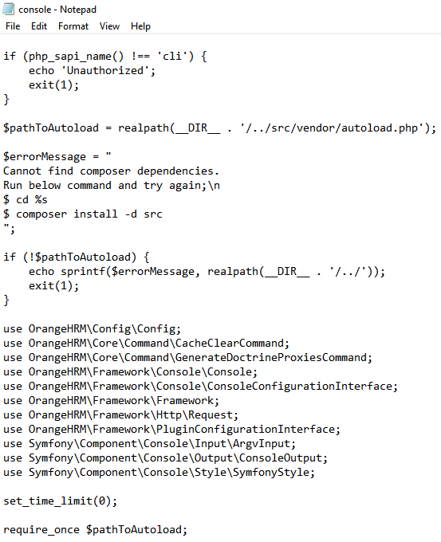
Gambar 9. Potongan Berkas Konfigurasi Sensitif Web Server yang Terbaca Akibat Celah Directory Traversal.
Evaluasi Temuan Log:
Penyerang memanfaatkan variasi URL-encoding (%2e%2e%2f) untuk menghindari deteksi filter WAF sederhana. Akses dengan status kode 200 OK ke berkas autoload.php dan .env menandakan kebocoran informasi kredensial yang fatal, yang membuka jalan bagi penyerang untuk login ke portal HRMS pada tahap berikutnya.
Investigasi mengkorelasikan seluruh artefak: log akses web, email phishing, akses file lokal, eksekusi malware, dan intelijen media sosial (OSINT).
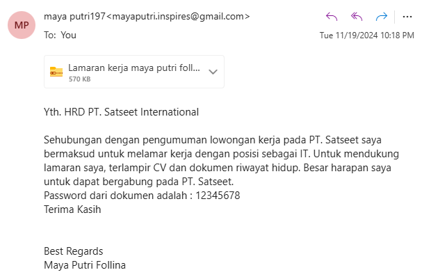
Gambar 10. Email Rekayasa Sosial Spear-Phishing Bertema Lowongan Kerja dari Akun Palsu "Maya Putri".
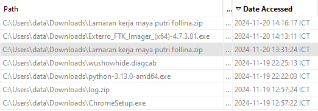
Gambar 11. Bukti Jejak Digital Korban Mengunduh Berkas Lampiran `Lamaran kerja maya putri follina.zip`.
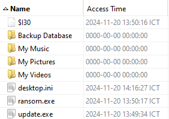
Gambar 12. Catatan Akses Waktu Nyata terhadap Berkas Berbahaya `update.exe` dan `ransom.exe`.
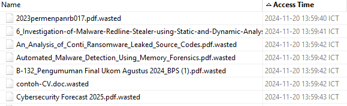
Gambar 13. Daftar Berkas Korban yang Terkunci dan Berubah Ekstensi Menjadi `.wasted`.
Tabel 4.4. Rekonstruksi Linimasa Komprehensif Serangan Multi-Vektor
| Tanggal & Waktu (WIB) | Sumber Artefak | Entitas / Akun | Deskripsi Peristiwa Serangan | Fase Serangan (Cyber Kill Chain) |
|---|---|---|---|---|
05/Nov/2024 19:58:02 |
access.log |
192.168.1.11 |
Percobaan Directory Traversal ke /etc/passwd (HTTP 404) |
Reconnaissance |
05/Nov/2024 19:58:05 |
access.log |
192.168.1.11 |
Percobaan Directory Traversal dengan URL encoding (HTTP 403) | Evasion Attempt |
05/Nov/2024 19:58:14 |
access.log |
192.168.1.11 |
Akses ke file autoload.php berhasil (HTTP 200) |
Information Gathering |
05/Nov/2024 19:58:20 |
access.log |
192.168.1.11 |
Akses ke berkas rahasia .env berhasil (HTTP 200) |
Credential Harvesting |
06/Nov/2024 17:54:00 |
Email Gateway | Local User 2 | Menerima email pertanyaan lowongan kerja dari "Maya Putri" | Reconnaissance Social |
19/Nov/2024 22:18:00 |
Email Gateway | Local User 1 ("Ahmad Habibie") | Email phishing lanjutan masuk membawa berkas lamaran kerja | Initial Access Weaponization |
20/Nov/2024 13:23:00 |
Web Log | 192.168.1.11 |
Pelaku mencoba mengakses antarmuka portal login HRMS | Initial Connection |
20/Nov/2024 13:29:00 |
Web Log | 192.168.1.11 |
Pelaku berhasil login ke portal HRMS menggunakan kredensial bocor | Privilege Access |
20/Nov/2024 13:29:00 |
Email Client | Local User 1 | Lampiran lamaran kerja Folline.zip diunduh oleh korban |
Delivery / User Execution |
20/Nov/2024 13:33:00 |
Disk / Endpoint | Local User 1 | Dokumen riwayat hidup dibuka, mengeksekusi CVE-2022-30190 | Remote Code Execution (RCE) |
20/Nov/2024 13:49:00 |
Disk / Endpoint | Local User 1 | Eksekusi otomatis update.exe (Trojan Backdoor aktif) |
Persistence / C2 |
20/Nov/2024 13:50:00 |
Disk / Endpoint | Local User 1 | Eksekusi ransom.exe (main_v2.exe / Python.Filecoder) |
Malware Execution |
20/Nov/2024 13:59:00 |
Disk / Storage | Sistem HRMS | Berkas-berkas penting terenkripsi dan berekstensi .wasted |
Impact (Ransomware) |
22/Nov/2024 09:00:00 |
OSINT / Telegram | BlackPython Team | Publikasi klaim pencurian data karyawan dan tuntutan pemerasan | Exfiltration & Extortion |
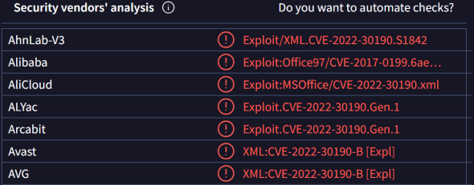
Gambar 14. Hasil Analisis Dokumen Lampiran Phishing pada VirusTotal yang Mendeteksi Eksploitasi CVE-2022-30190.
update.exe):update.exe sebagai Trojan.Win32/Shell.R128S dan Backdoor.Win/shellcode.apid. Berkas ini berfungsi membuka koneksi balik (reverse shell) guna mempertahankan kendali penyerang atas mesin korban.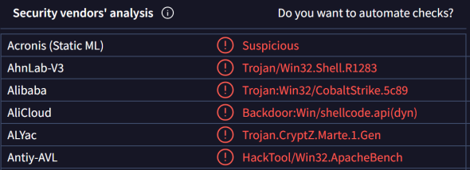
Gambar 15. Hasil Deteksi Berkas `update.exe` pada VirusTotal sebagai Trojan Backdoor.
ransom.exe):ransom.exe (awalnya dinamai main_v2.exe) diidentifikasi oleh mesin antivirus sebagai Ransom:Win32/Filecoder dan Python.Filecoder. Malware ini mengenkripsi dokumen penting dan menambahkan ekstensi .wasted.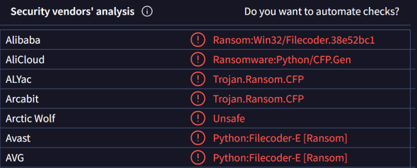
Gambar 16. Hasil Deteksi Berkas `ransom.exe` pada VirusTotal sebagai Ransomware Python.Filecoder.
Tabel 4.5. Ringkasan Singkat Hasil Analisis Forensik Digital (Laporan Eksekutif)
| Parameter Evaluasi | Rincian Temuan Investigasi Forensik |
|---|---|
| Rentang Waktu Insiden | 5 – 22 November 2024 |
| Sistem yang Diserang | Human Resource Management System (HRMS) dan Web Server |
| Vektor Serangan | Directory Traversal, Remote Code Execution (Follina), Ransomware |
| Identitas Aktor Penyerang | Sindikat BlackPython Team |
| Dampak Kerusakan | Enkripsi data penting korporat, kebocoran data sensitif karyawan, gangguan operasional HRMS, risiko reputasi dan hukum |
| Integritas Bukti Forensik | Terverifikasi utuh 100% (MD5, SHA-1, SHA-256 match) |
Berdasarkan temuan forensik, dirumuskan strategi pertahanan mendalam (defense-in-depth) mencakup aspek teknis, prosedural, dan tata kelola:
../, %2e, atau karakter kontrol traversal lainnya..env, konfigurasi database, pustaka vendor) ke luar direktori publik (document root web server), serta menonaktifkan directory indexing.winword.exe) yang memanggil powershell.exe atau msdt.exe.%TEMP%, %APPDATA%, Downloads) menggunakan fitur AppLocker atau Software Restriction Policies.COCOK tanpa adanya indikasi pemalsuan bukti.192.168.1.11 yang membocorkan berkas konfigurasi internal (.env), diikuti kampanye spear-phishing bertarget yang mengeksploitasi kerentanan Follina RCE (CVE-2022-30190), dan diakhiri dengan serangan ransomware serta pemerasan oleh kelompok BlackPython Team.